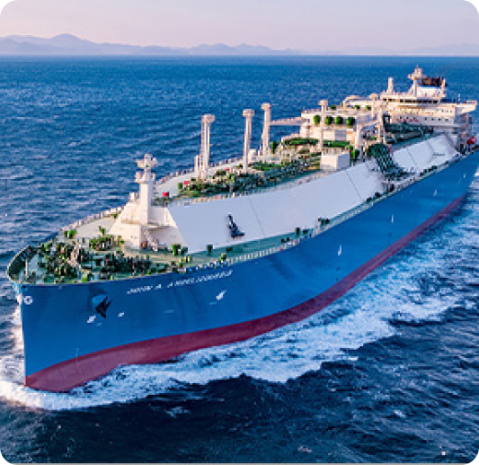
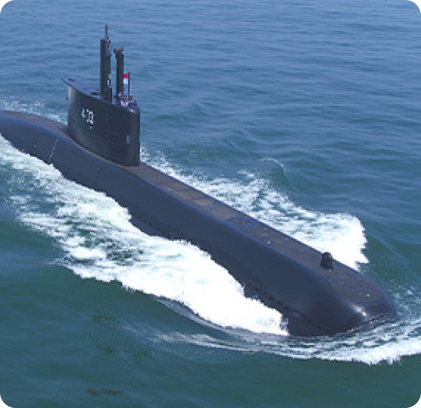
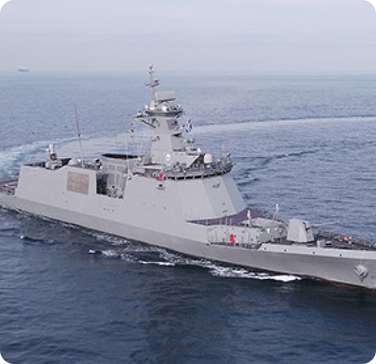

상선/특수선
하드웨어와 소프트웨어의 파괴적 혁신을 통해 세계 최고의 기술과
경쟁력을 자랑합니다.
가스선
유조선
여객선
잠수함
전투함
살물선
컨테이너선
자동차운반선
-
가스선
- LNG 운반선 (LNG Carrier)
-
LNG 운반선(LNG Carrier)은 천연가스를 압축/액화시켜
수송하는 용도의 선박입니다. 독자적으로 개발한
‘LNG연료시스템 (FGSS)’과 ‘천연가스 재액화 장치(PRS)’ 등
LNG관련 기술 우위를 바탕으로 세계 최고 경쟁력을 보유하고
있습니다.
-
또한 러시아 프로젝트용으로 북극해에서 자체 쇄빙 운항이
가능한 최첨단 기술의 LNG 운반선 15척을 수주하였고, 2017년
12월, 세계 최초로 Yamal LNG를 선적하고 동절기 쇄빙운항으로
북극항로를 통과하는 신기원을 이루었습니다.
-
천연가스 추진엔진(ME-GI)과 재액화설비를 탑재하여 기존
LNG운반선 대비 연료 효율은 높아지고 오염물질 배출량은
낮추는 등 기술 선도 기업으로서의 면모를 다시 한 번
과시하고 있습니다.
- 부유식 LNG 저장 재기화 설비 (LNG-FSRU)
-
LNG-FSRU(부유식 LNG 저장 재기화 설비)는 천연가스의 수요가
일시적으로 급증하는 곳이나 육상설비 건설이 어려운 지역에
별도의 대형투자 없이 경제적으로 천연가스를 공급할 수 있는
대표적 고부가가치 제품으로, 그 시장이 점차 확대되고
있습니다. 세계 최초로 LNG-FSRU를 성공적으로 인도한 데
이어, 세계 최대 LNG-FSRU를 건조하는 기록을 달성하는 등 LNG
운반선의 기술경쟁력을 LNG-FSRU 분야에서도 유감없이
발휘하고 있습니다.
- LPG 운반선 (LPG Carrier)
-
LPG 운반선(LPG Carrier)는 석유가스를 압축/액화시켜
수송하는 용도의 선박입니다. 동시에 4척의 대형 LPG
운반선(VLGC)을 성공적으로 건조하며, 정확한 납기 준수와
최고 수준의 기술력으로 세계 시장을 선도하고 있습니다. 현재
환경규제 기준을 준수하고 연료비 절감으로 경제성을 확보할
수 있는 ME-LGIP(LPG 이중연료엔진) 탑재 선박을 건조
하고있습니다.

-
유조선
- 시장점유율 1위를 유지하게 하는 독보적인 건조 기술
-
세계에서 운항중인 초대형 유조선 (VLCC : Very Large Crude
oil Carrier) 건조 척수 기준으로 세계 1위(점유율 약 20%)를
기록하고 있습니다. 이 뿐만 아니라, 원유운반선, 셔틀탱커,
정유운반선, 화학제품운반선 등 각종 유조선을 건조하였으며,
이를 통해 독보적인 유조선 건조기술을 보유하고 있습니다.
-
특히 Major End-User인 Shell 사로부터 고압 이중연료
추진엔진(ME-GI 엔진)과 고망간강을 사용한 연료탱크가 적용된
이중연료추진 선박을 수주하며, 전 선종에 대해 이중연료추진
선박 수주에 성공하였습니다.
-
당사가 건조하는 유조선은 국제해사기구(IMO)의 환경규제
기준을 충족하는 차세대 친환경선박으로, 고효율엔진과 최신
연료절감 기술 등을 적용하여 선박건조시장을 선도해나가고
있습니다.

-
여객선
- 아름다움과 편안함 두루 갖춘 여객선
-
40노트급 초고속카페리, 472인승 「트레저 아일랜드」호,
1천5백명의 승객과 자동차 200대를 운송하는 그리스 블루스타
카페리, 이탈리아 모비라인사의 1,880인승 호화카페리를
차례로 건조, 선진 여객선 건조기술을 습득 했습니다. 2010년
튀니지 선사로부터 1척의 패신저 페리를 수주하여 여객선
기술을 이어 나가고 있습니다.
-
이 여객선들은 가볍고 튼튼한 선체구조와 아름다운 선형,
빼어난 실내 인테리어 등으로 크게 주목 받고 있습니다.
2000년과 2001년 국내 최초로 해외에 수출한 두 척의 카페리가
연속으로 세계 최우수 선박에 선정돼 건조 여객선의 우수성을
입증했습니다.

-
잠수함
- 전세계 잠수함 시장의 떠오르는 리더
-
당사의 잠수함 역사는 한국 해군의 잠수함 역사와 함께
합니다.
-
1980년대 말 KSS-I급 잠수함 건조를 시작으로, KSS-II 사업에
참여하였으며, 2021년 8월에는 우리나라 최초로 독자 설계 및
건조한 KSS-III 도산 안창호함을 인도하며 명실상부 대한민국
잠수함 명가임을 입증하였습니다.
-
또한 수 많은 창정비 사업을 수행하면서 잠수함 관련 독자
기술을 개발해왔습니다.
-
이에 힘입어 그 동안 축적한 잠수함 건조 기술로 잠수함
해외수출 사업에 나서 2004년 인도네시아 잠수함 창정비 사업
수출을 시작으로, 2011년 3척의 인도네시아 해군 잠수함 신조
계약을 체결하여 2021년 3월 성공적으로 인도하였습니다.
-
방산 분야에서 국내 조선업계 최다 실적으로 쌓아온 노하우와
기술 역량으로 글로벌 방산업계 해양 분야 최강자로
도약하겠다는 계획을 실천하고 있습니다.

-
전투함
- 최첨단 기술의 전투함
-
30년 이상 독보적인 특수선 건조 노하우를 축적해옴에 따라
특수선 건조를 위한 각종 설비와 전문 인력 확보에 심혈을
기울인 결과, 대한민국 대표 방산업체로 도약하고 있습니다.
-
특히 한국 해군의 주력 구축함인 4천톤급 헬기탑재 구축함을
국내 최초로 100% 자체 설계, 1989년 건조하여 실전배치
했습니다. 이 구축함은 스텔스 개념의 자체 방어 능력과
30노트의 속력, 항공기, 수상함, 잠수함은 물론 미사일까지
추적 파괴할 수 있는 뛰어난 전투 성능을 갖추고 있습니다.
4천t급 구축함에 이어, 1999년 대양작전이 가능한 5천t급
구축함 3척을 성공적으로 건조하였고, 1만톤급 구축함 1척을
비롯, 총 35여척의 수상함 건조 실적을 보유하고 있습니다.
-
또한 첨단 기술의 집약체인 한국 해군의 차세대 전투함정인
FFX-II 호위함 2척을 인도하며 한국 해군의 전투함 세대
교체를 주도하고 이 같은 기술력을 바탕으로 국내 최초로
방글라데시 해군으로부터 2천300t급 전투함을 수주하였으며,
태국 해군에 ‘수출형 호위함’을 인도하여 한국을 전투함정
수출국에 올려놓았습니다. 이 밖에도 1,000~10,000t에 이르는
각종 전투함들을 건조하고 있습니다.

-
살물선
- 안정성과 경제성을 모두 갖춘 살물선
-
4만톤급에서부터 40만톤급까지 다양한 살물선을 건조하여
시장에서 품질의 우수성과 안전성에 대한 좋은 평판을 얻고
있습니다.
-
특히 이중선체 살물선은 2006년경부터 강제 시행중인 이중선체
규정을 적용함으로써 사고로 인한 침몰 위험을 크게 줄였고
화물 하역 및 화물창 유지보수의 편리성으로 인한 선박
유지비용의 절감으로 인해 많은 선주들의 주목을 받고
있습니다.
-
컨테이너선
- 친환경 초대형 컨테이너 선박의 선두주자
-
세계 초대형 컨테이너 화물선 머스크 트리플-E를 18,000 TEU
20척을 수주 한 이래, 지속적인 기술개발로 세계 초대형
컨테이너선 시장을 선도해오고 있습니다
-
당사는 20피트 컨테이너 23,000개를 11단까지 적재/운항이
가능한 초대형 컨테이너선 건조 기술을 보유하고 있으며, 선박
대형화 등 시장 Trend를 선도하고 있습니다.
-
최근 해외 선주사로부터 이중연료 추진엔진이 탑재된 23,500
TEU급 컨테이너선 12척을 수주하였으며, 업계 최초로 LNG
연료탱크에는 고망간강을 활용하는 등 친환경 선박 시장을
개척하고 주도 해나가고 있습니다.
-
자동차운반선
- 화물의 개념을 송두리째 바꾼 자동차운반선
- 변형을 최소화하는 얇은 철판 용접기법과 좁은 공간에 최대의 차량을 싣는 내부설계로 최대의 적재효율을 자랑합니다.
- 특히 당사가 자체 설계한 38,300DWT급 다목적 자동차운반선은 차량은 물론 탱크, 헬기까지 운송할 수 있는 새로운 개념의 자동차운반선 입니다.
- 당사는 사상 최대 크기의 8,000 UNIT급 자동차 운반선을 건조한 실적이 있습니다.